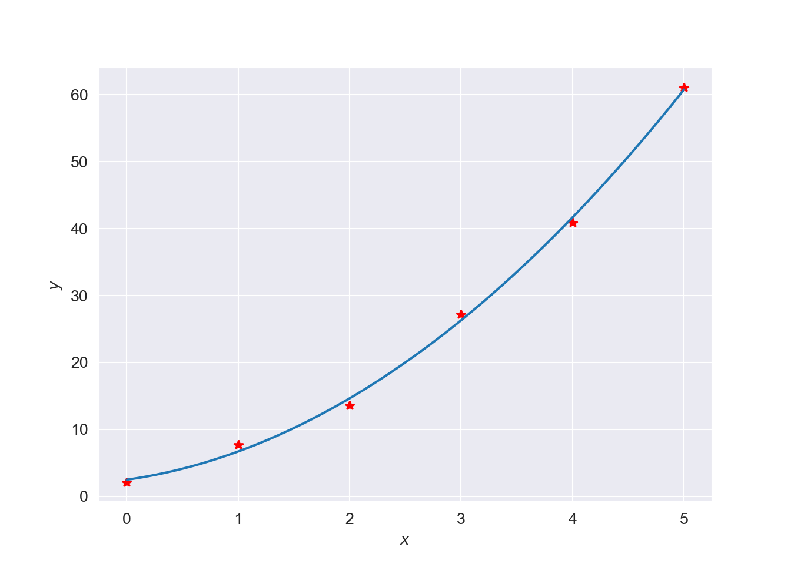
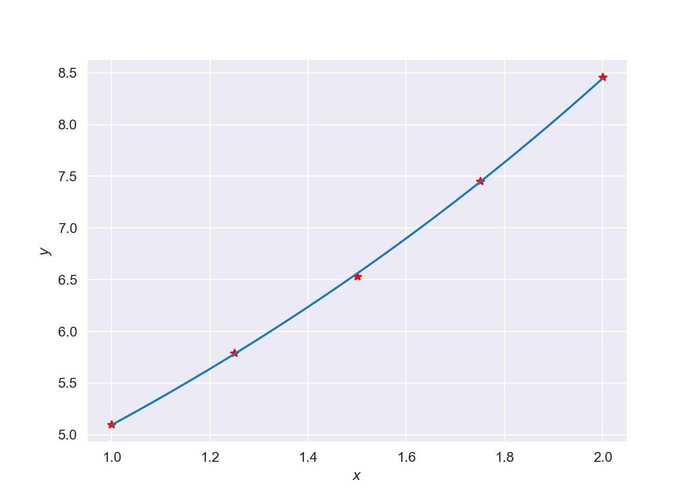

Chapter 6 Least Squares
When considering experimental data it is commonly associated with noise. This noise could be resultant of measurement error or some other experimental inconsistency. In these instances, we want to find a curve that fits the data points “on the average”. That is, we do not want to overfit the data, thereby amplifying any of the noise. With this in mind, the curve should have the simplest form (i.e. lowest order polynomial possible). Let: \[ f(x) = f(x, a_1, a_2, \ldots, a_m), \] be the function that is to be fitted to the \(n\) data points (\(x_i, y_i\)), \(i = 1, 2, \ldots, n\). Thus, we have a function of \(x\) that contains the parameters \(a_j, \ \ j = 1, 2,\ldots, m\), where \(m < n\). The shape of \(f(x)\) is known a priori, normally from the theory associated with the experiment in question. This means we are looking to fit the best parameters. Thus curve fitting is a two step process; (i) selecting the correct form of \(f(x)\) and (ii) computing the parameters that produce the best fit to the data.
The notion of best fit (at least for the purpose of this course) considers noise bound to the \(y\)-coordinate. The most common of which is measured by the least squares fit, which minimises: \[\begin{equation} S(a_1, a_2, \ldots, a_m) = \sum_{i=1}^n \left[y_i - f(x_i)\right]^2,\tag{6.1} \end{equation}\] with respect to each \(a_j\). The optimal values of the parameters are given by the solution of the equations: \[\begin{equation} \dfrac{\partial S}{\partial a_k} = 0, \ \ \ k = 1, 2,\ldots, m. \end{equation}\] We measure the residual as \(r_i = y_i - f(x_i)\) from Equation (6.1) which represent the discrepancy between the data points and the fitting function at \(x_i\). The function \(S\) is the sum of the squares of all residuals.
A Least squares problem is said to be linear if the fitting function is chosen as a linear combination of functions \(f_j(x)\): \[\begin{equation}\label{eq:linearcomb} f(x) = a_1f_1(x) + a_2f_2(x) + \ldots + a_mf_m(x). \end{equation}\] Here an example could be where \(f_1(x) = 1, f_2(x) = x, f_3(x) = x^2\) etc. Often these polynomials can be nonlinear and become increasingly difficult to solve. For the purpose of this course we will only consider linear least squares.
6.1 Linear Least Squares
We fit the straight line \(y=a_0+a_1 x\) through some given \(n\) points. The sum of the squares of the deviations is \[ S=\sum_{i=1}^{n}[y_i-f(x_i)]^2=\sum_{i=1}^{n}[y_i-(a_0+ a_1 x_i)]^2 \] A necessary condition for \(S(a_0,a_1)\) to be a minimum is that the first partial derivatives of \(S\) w.r.t. \(a_0\) and \(a_1\) must be zero: \[\begin{eqnarray} {\partial E\over \partial a_0} &=&-2 \sum_{i=1}^{n} [y_i-a_0-a_1 x_i)]=0\\ {\partial E\over \partial a_1} &=&-2 \sum_{i=1}^{n}x_i [y_i-a_0-a_1 x_i)]=0 \end{eqnarray}\] We can rewrite these sums as: \[\begin{eqnarray} a_0 n +a_1\sum_{i=1}^n x_i &=& \sum_{i=1}^n y_i\tag{6.2}\\ a_0\sum_{i=1}^n x_i+a_1 \sum_{i=1}^n x_i^2 &=&\sum_{i=1}^n x_i y_i\tag{6.3} \end{eqnarray}\] These equations are called the normal equations. They can be solved simultaneously for \(a_1\): \[\begin{equation} a_1 = {n\sum_i x_i y_i- \sum_i x_i\sum_i y_i \over n\sum_i x_i^2 -\left(\sum_i x_i \right)^2} \end{equation}\] This result can then be used in conjunction with the Equation (6.2) to solve for \(a_0\): \[\begin{equation} a_0={1\over n}\left(\sum_{i=1}^n y_i- a_1\sum_{i=1}^n x_i\right). \end{equation}\]
So in matrix form: \[\begin{eqnarray} \begin{bmatrix} n & \sum_{i=1}^{n}x_i \\ \sum_{i=1}^{n}x_i & \sum_{i=1}^n x_i^2 \end{bmatrix} \begin{bmatrix} a_0\\ a_1 \end{bmatrix} =\begin{bmatrix} \sum_{i=1}^{n}y_i \\ \sum_{i=1}^n x_iy_i \end{bmatrix}. \end{eqnarray}\] Therefore: \[\begin{eqnarray} \begin{bmatrix} a_0\\ a_1 \end{bmatrix} = \begin{bmatrix} n & \sum_{i=1}^{n}x_i \\ \sum_{i=1}^{n}x_i & \sum_{i=1}^n x_i^2 \end{bmatrix}^{-1} \begin{bmatrix} \sum_{i=1}^{n}y_i \\ \sum_{i=1}^n x_iy_i \end{bmatrix}. \end{eqnarray}\]
6.1.0.1 Example
Consider the data:
| \(x_i\) | 1 | 2 | 3 | 4 | 5 | 6 | 7 |
|---|---|---|---|---|---|---|---|
| \(y_i\) | 0.5 | 2.5 | 2.0 | 4.0 | 3.5 | 6.0 | 5.5 |
To find the least squares line approximation of this data, extend the table and sum the columns, as below:
| \(x_i\) | \(y_i\) | \(x_i^2\) | \(x_i y_i\) |
|---|---|---|---|
| 1 | 0.5 | 1 | 0.5 |
| 2 | 2.5 | 4 | 5.0 |
| 3 | 2.0 | 9 | 6.0 |
| 4 | 4.0 | 16 | 16.0 |
| 5 | 3.5 | 25 | 16.5 |
| 6 | 6.0 | 36 | 36.0 |
| 7 | 5.5 | 49 | 37.5 |
| \(\scriptsize\sum=28\) | \(\scriptsize\sum=24\) | \(\scriptsize\sum=140\) | \(\scriptsize\sum=119.5\) |
\[ a_1= {7(119.5)-28(24)\over 7(140)-28^2} =0.8393 \] and hence: \[ a_0 ={24-0.8393(28)\over 7}=0.0714\] The least squares linear fit is: \[y=0.0714+0.8393 x \]
Or alternatively in matrix form we have: \[ \begin{bmatrix} a_0 \\ a_1 \end{bmatrix}= \begin{bmatrix} 7 & 28 \\ 28 & 140 \end{bmatrix}^{-1} \begin{bmatrix} 24 \\ 119.5 \end{bmatrix} \] Solving gives the following:
import numpy as np
import numpy.linalg as LA
A = np.array([[7, 28],[28, 140]])
b = np.array([24, 119.5])
tans = np.dot(LA.inv(A), b)
# Solving the matrix equation gives:
print('The value for a_0 is:', tans[0])## The value for a_0 is: 0.0714285714285694## The value for a_1 is: 0.839285714285714x = np.array([1, 2, 3, 4, 5, 6, 7])
y = np.array([0.5, 2.5, 2.0, 4.0, 3.5, 6.0, 5.5])
bans = np.polyfit(x, y, 1)
# Note polyfit returns function of form P(x) = p[0]*x**degree .... (This is the opposite direction of above so flip)
bans = bans[::-1]
print('The value for a_0 with builtin is:', bans[0])## The value for a_0 with builtin is: 0.07142857142857305## The value for a_1 with builtin is: 0.8392857142857142
6.2 Polynomial Least Squares
The least squares procedure above can be readily extended to fit the data to an \(m\)th degree polynomial: \[\begin{equation} f(x)=P_m(x)=a_0+a_1 x+\cdots+a_m x^m \end{equation}\] through some \(n\) data points \((x_1,P_m(x_1)),(x_2,P_m(x_2)),\ldots,(x_m,P_m(x_n))\), where \(m\leq n-1\). Then, \(S\) takes the form: \[\begin{equation} S=\sum_{i=1}^{n} [y_i-f(x_i)]^2\tag{6.4} \end{equation}\] which depends on the \(m+1\) parameters \(a_0,\;a_1,\cdots,\;a_m\). We then have \(m+1\) conditions: \[ {\partial E\over\partial a_0}=0,\;\; {\partial E\over\partial a_1}=0,\;\; \cdots,{\partial E\over\partial a_m}=0 \] which gives a system of \(m+1\) normal equations: \[\begin{eqnarray} a_0 \;n &+& a_1\sum_{i=1}^n x_i+a_2\sum_{i=1}^n x_i^2+\cdots+a_m\sum_{i=1}^n x_i^m = \sum_{i=1}^n y_i\\ a_0 \sum_{i=1}^n x_i &+& a_1\sum_{i=1}^n x_i^2+a_2\sum_{i=1}^n x_i^3+\cdots+ a_m\sum_{i=1}^n x_i^{m+1} = \sum_{i=1}^n x_i y_i\\ a_0 \sum_{i=1}^n x_i^2 &+& a_1\sum_{i=1}^n x_i^3+a_2\sum_{i=1}^n x_i^4+\cdots+ a_m\sum_{i=1}^n x_i^{m+2} = \sum_{i=1}^n x_i^2 y_i\\ \vdots && \vdots\\ a_0 \sum_{i=1}^n x_i^m &+& a_1\sum_{i=1}^n x_i^{m+1}+a_2\sum_{i=1}^n x_i^{m+2}+ \cdots+ a_m\sum_{i=1}^n x_i^{2m} = \sum_{i=1}^n x_i^m y_i \end{eqnarray}\] These are \(m+1\) equations and have \(m+1\) unknowns: \(a_0,\;a_1,\;\cdots a_m\).
So for a quadratic polynomial fit, \(m=2\),and the required polynomial is \(f(x)=a_0+a_1 x+a_2 x^2\) obtained from solving the normal equations: \[\begin{eqnarray} a_0 n &+& a_1\sum_{i=1}^n x_i+ a_2\sum_{i=1}^n x_i^2 =\sum_{i=1}^n y_i\\ a_0 \sum_{i=1}^n x_i &+& a_1\sum_{i=1}^n x_i^2 + a_2\sum_{i=1}^n x_i^3 =\sum_{i=1}^n x_i y_i\\ a_0 \sum_{i=1}^n x_i^2 &+& a_1\sum_{i=1}^n x_i^3 + a_2\sum_{i=1}^n x_i^4 =\sum_{i=1}^n x_i^2 y_i \end{eqnarray}\] for \(a_0,\,a_1,\,\) and \(a_2.\)
Note: This system is symmetric and can be solved using Gauss elimination.
6.2.0.1 Exercise
Fit a second degree polynomial to the data
| \(x_i\) | 0 | 1 | 2 | 3 | 4 | 5 |
|---|---|---|---|---|---|---|
| \(y_i\) | 2.1 | 7.7 | 13.6 | 27.2 | 40.9 | 61.1 |
import numpy.linalg as LA
x = np.array([0, 1, 2, 3, 4, 5])
y = np.array([2.1, 7.7, 13.6, 27.2, 40.9, 61.1])
n = len(x)
sumX = sum(x)
sumY = sum(y)
sumX2 = sum(x**2)
sumX3 = sum(x**3)
sumX4 = sum(x**4)
sumXY = sum(x * y)
sumXXY = sum(x**2 * y)
A = np.array([[n, sumX, sumX2],[sumX, sumX2, sumX3], [sumX2, sumX3, sumX4]])
print(A)## [[ 6 15 55]
## [ 15 55 225]
## [ 55 225 979]]## [ 152.6 585.6 2488.8]tans = np.dot(LA.inv(A), b)
# Solving the matrix equation gives:
print('The value for a_0 is:', tans[0])## The value for a_0 is: 2.478571428571229## The value for a_1 is: 2.3592857142858747## The value for a_2 is: 1.8607142857142804bans = np.polyfit(x, y, 2)
# Note polyfit returns function of form P(x) = p[0]*x**degree .... (This is the opposite direction of above so flip)
bans = bans[::-1]
print('The value for a_0 with builtin is:', bans[0])## The value for a_0 with builtin is: 2.4785714285714366## The value for a_1 with builtin is: 2.3592857142857095## The value for a_1 with builtin is: 1.8607142857142878
Remark: As the degree \(m\) increases the coefficient matrix becomes extremely ill-conditioned. It is therefore not recommended to fit least squares polynomials of degree greater than 4 to given data points.
Also, it would be common practice to use built-in libraries to do these computations instead of programming it yourself. In addition, any real world scenario would likely involve a massive number of data points. Gradient descent techniques could also be applied. You may find these within machine learning courses etc.
6.3 Least Squares Exponential Fit
Frequently a theory may suggest a model other than a polynomial fit. A common functional form for the model is the exponential function: \[\begin{equation} y=a e^{b x}.\tag{6.5} \end{equation}\] for some constants \(a\) and \(b\). We have from Equation (6.4): \[\begin{equation} S=\sum_{i=1}^{n} [y_i-a e^{b x_i}]^2. \end{equation}\] When the derivatives of \(S\) with respect to \(a\) and \(b\) are set equal to zero the resulting equations are: \[\begin{eqnarray} {\partial E\over\partial a}&=&-2\sum_{i=1}^n e^{b x_i}[y_i-a e^{b x_i}]=0\\ {\partial E\over\partial b}&=&-2\sum_{i=1}^n a x_i e^{b x_i}[y_i-a e^{b x_i}]=0 \end{eqnarray}\] These two equations in two unknowns are nonlinear and generally difficult to solve.
It is sometimes possible to “linearise” the normal equations through a change of variables. If we take natural logarithm of our equation (6.5) we have: \[ \ln(y)= \ln(a e^{bx})=\ln(a)+b x \] We introduce the variable \(Y=\ln(y)\), \(a_0=\ln(a)\) and \(a_1=b\). Then the linearized equation becomes: \[\begin{equation} Y(x)=a_0+a_1 x, \end{equation}\] and the ordinary least squares analysis may then be applied to the problem. Once the coefficients \(a_0\) and \(a_1\) have been determined, the original coefficients can be computed as \(a=e^{a_0}\) and \(b=a_1\).
6.3.0.1 Example
Fit an exponential function to the following data
| \(x_i\) | 1.00 | 1.25 | 1.50 | 1.75 | 2.00 |
|---|---|---|---|---|---|
| \(y_i\) | 5.10 | 5.79 | 6.53 | 7.45 | 8.46 |
To fit an exponential least squares fit to this data, extend the table as:
| \(x_i\) | \(y_i\) | \(Y_i=\ln y_i\) | \(x_i^2\) | \(x_i Y_i\) |
|---|---|---|---|---|
| 1.00 | 5.10 | 1.629 | 1.0000 | 1.629 |
| 1.25 | 5.79 | 1.756 | 1.5625 | 2.195 |
| 1.50 | 6.53 | 1.876 | 2.2500 | 2.814 |
| 1.75 | 7.45 | 2.008 | 3.0625 | 3.514 |
| 2.00 | 8.46 | 2.135 | 4.000 | 4.270 |
| \(\scriptsize\sum=7.5\) | \(\scriptsize\sum=33.3\) | \(\scriptsize\sum=9.404\) | \(\scriptsize\sum=11.875\) | \(\scriptsize\sum=14.422\) |
Using the normal equations for linear least squares give: \[ a_1=b={5(14.422)-7.5(9.404)\over 5(11.875)-(7.5)^2}=0.5056 \] and hence: \[ a_0=\ln a={9.404- 0.5056(7.5)\over 5}=1.122,\ \ \ \ a=e^{1.122} \] The exponential fit is: \[\begin{eqnarray} Y &=&1.122+ 0.5056 x\\ \ln y &=&1.122+ 0.5056 x\\ y &=&3.071 e^{0.5056 x} \end{eqnarray}\]
import numpy.linalg as LA
x = np.array([1.0, 1.25, 1.5, 1.75, 2.0])
y = np.array([5.1, 5.79, 6.53, 7.45, 8.46])
sumX = sum(x)
sumY = sum(y)
bans = np.polyfit(x, np.log(y), 1)
# Note polyfit returns function of form P(x) = p[0]*x**degree .... (This is the opposite direction of above so flip)
bans = bans[::-1]
bans[0] = np.exp(bans[0])
print('The value for a_0 with builtin is:', bans[0])## The value for a_0 with builtin is: 3.072492713621628## The value for a_1 with builtin is: 0.5057196034329067
6.3.1 Exercises
- Find the least squares polynomials of degrees one, two and three for the data, computing the error \(S\) in each case.
| \(x\) | 1.0 | 1.1 | 1.3 | 1.5 | 1.9 | 2.1 |
|---|---|---|---|---|---|---|
| \(y\) | 1.84 | 1.96 | 2.21 | 2.45 | 2.94 | 3.18 |
Ans: \[ \begin{array}[t]{l} y=0.6209+1.2196x,\quad y=0.5966+1.2533 x-0.0109x^2,\\ y=-0.01 x^3+0.0353 x^2+1.185 x+0.629\end{array} \]
- An experiment is performed to define the relationship between applied stress and the time to fracture for a stainless steel. Eight different values of stress are applied and the resulting data is:
| Applied stress, \(x\), kg/mm\(^2\) | 5 | 10 | 15 | 20 | 25 | 30 | 35 | 40 |
|---|---|---|---|---|---|---|---|---|
| Fracture time, \(t\), h | 40 | 30 | 25 | 40 | 18 | 20 | 22 | 15 |
Use a linear least squares fit to determine the fracture time for an applied stress of 33 kg/mm\(^2\)to a stress. (Ans: \(t=39.75 -0.6 x,\quad t=19.95\) hours)
- Fit a least squares exponential model to:
| \(x\) | 0.05 | 0.4 | 0.8 | 1.2 | 1.6 | 2.0 | 2.4 |
|---|---|---|---|---|---|---|---|
| \(y\) | 550 | 750 | 1000 | 1400 | 2000 | 2700 | 3750 |
(Ans: \(\displaystyle y=530.8078 e^{0.8157 x}\))